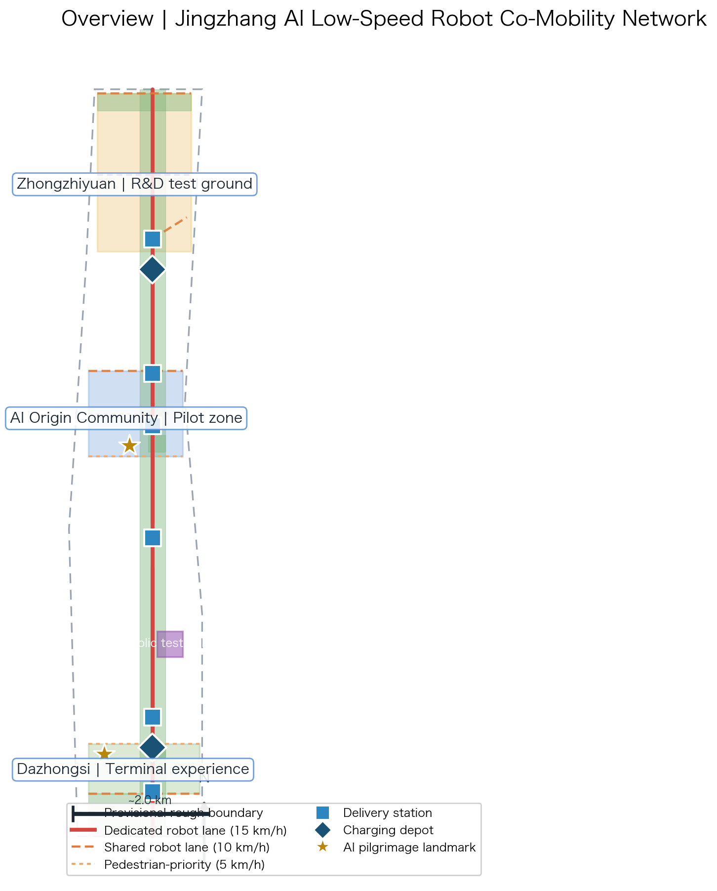
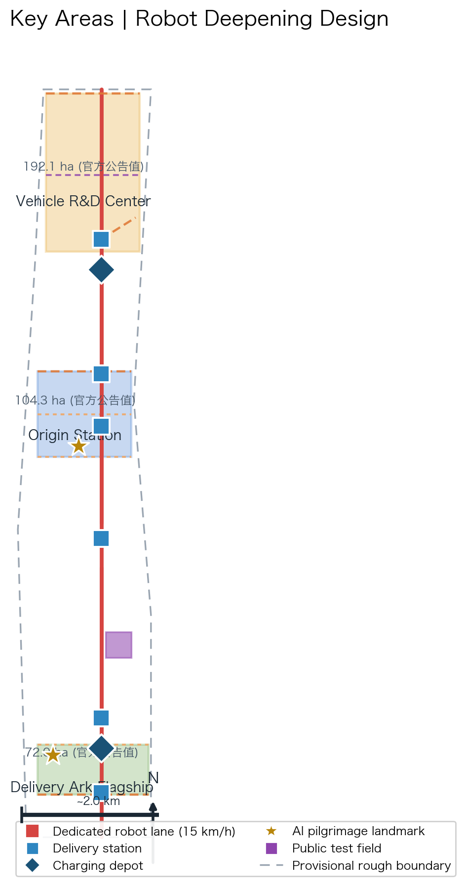
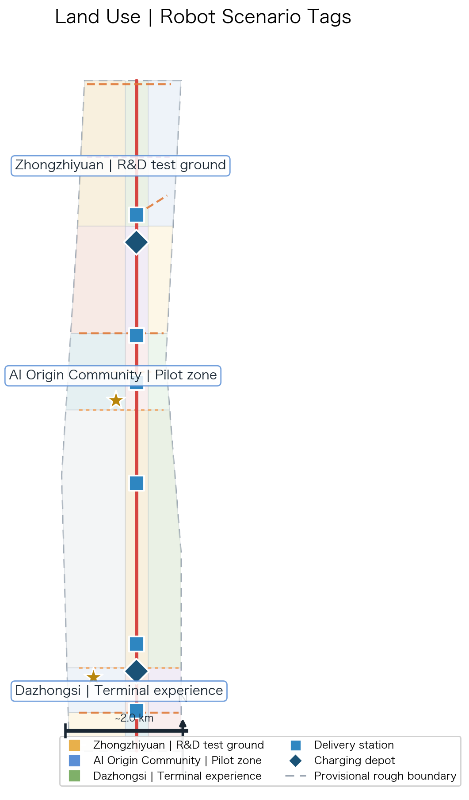
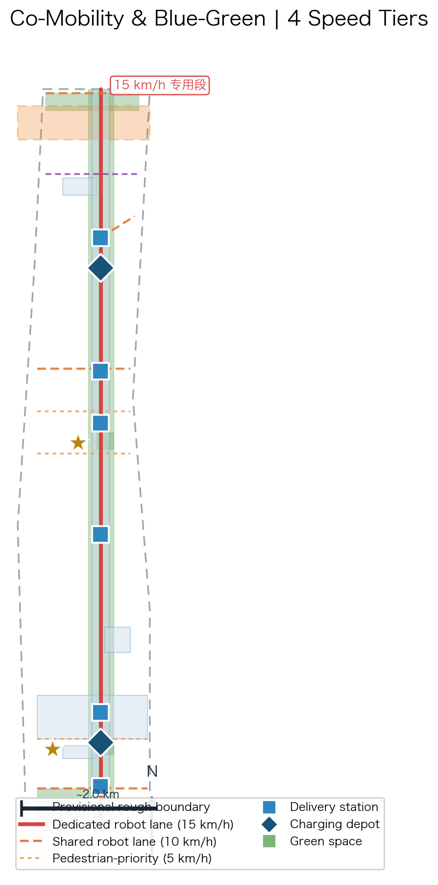
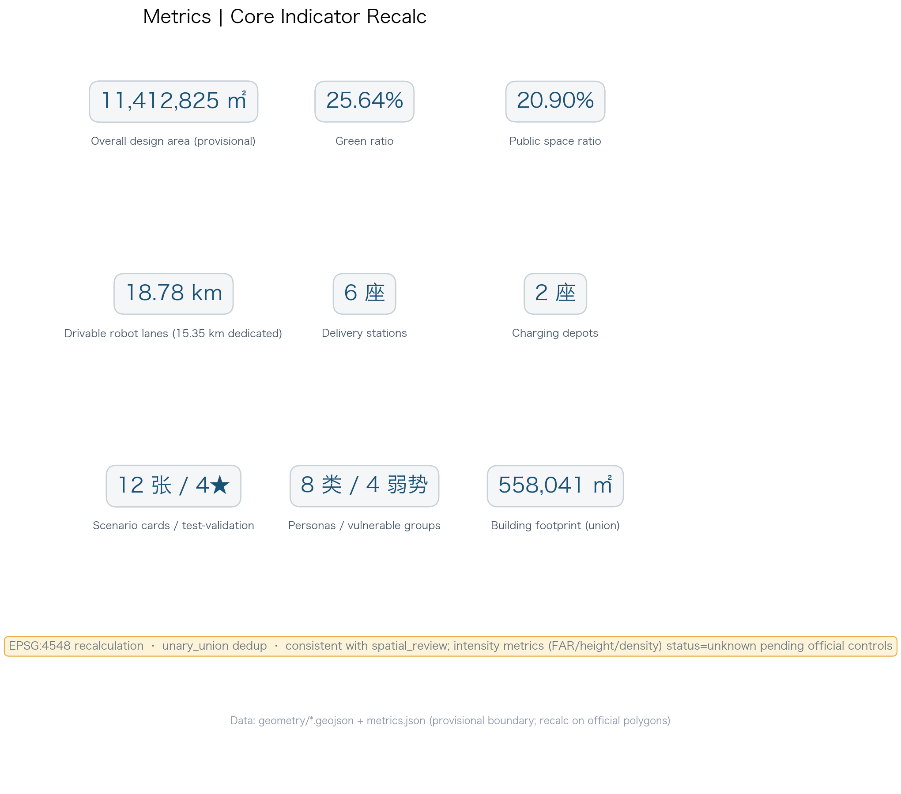

Jingzhang AI Low-Speed Robot Co-Mobility Network · Visual Page
JZ CoMobility — a new human-robot shared spine for the smart city
Offline static visual page. The design uses a provisional rough boundary (official_boundary=false); all content is conceptual. Recalculate once official polygons are published. This proposal constitutes no government review conclusion or implementation commitment.
Overview map · Three-level scope · Key areas
Overview: main corridor and three-area linkage

Fig 1 | Overview: main corridor, six stations, two depots, three key areas

Fig 3 | Key-area robot deepening design
Land use · Mobility · Blue-green space · Buildings
Network design within the provisional boundary

Fig 2 | Land-use parcels and robot scenario tags

Fig 4 | Four speed tiers and blue-green system
AI scenarios · Renewal projects
Scenario card digest
Card
Scenario
Users
Carrier
RB-01
Community smart delivery
Residents
Six stations
RB-02
Medicine express
Elderly & patients
Pharmacy-station-community
RB-04
Park tour guide
Visitors & residents
Five greenway segments
RB-05
Night safety patrol
Parks & communities
Patrol buffer
★RB-09
Co-mobility conflict test
Test fleet & public
Public test field
★RB-12
Remote takeover drill
Operators
Dispatch center + network
Renewal project digest
ID
Project
Phase
Type
JZ-01
Origin Community delivery demo
Near-term
Pilot ops
JZ-02
Main corridor lane marking
Near-term
Transport
JZ-05
Cloud dispatch digital twin
Near-term
Digital platform
JZ-06
Co-mobility conflict test field
Mid-term
Test facility
JZ-07
Robot Time-Space Museum
Mid-term
Cultural building
JZ-11
5th Ring overpass segment
Long-term
Key design segment
Core metrics
Site area (provisional)
11,412,825 m²
Green ratio
25.64%
Public-space ratio
20.90%
Drivable robot lanes
18,781 m
Dedicated lanes
15,351 m
Delivery stations
6
Charging depots
2
Key areas
3

Fig 5 | Core metric recalculation
Task coverage · Self-check
Operational KPIs and self-check
Announcement 1.3 world-class AI ecosystem
Announcement 1.4 three-level design tasks
Announcement 1.5 key-area detail
agent.1 concept & Logo
agent.2 ecosystem cases & map
agent.3 scenario cards & personas
agent.4 public space & landmarks
agent.5 culture narrative
agent.6 long-term operation
Deterministic (format/hash/topology): pending final self_check
Spatial: 18 parcels full coverage, no overlap; 6 metrics union-recalculated
Visual: offline static, 14 markers present
Professional: 15 design-depth items complete
Sources · Assumptions
Announcement (PROJECT-OFFICIAL-ANNOUNCEMENT)
Agent taskbook
Provisional boundaries
Beijing High-level AD Zone (policy background)
6 global low-speed robot cases (background)
Barrier-Free Law / Generative-AI Measures
Lane widths & speeds are conceptual, pending traffic review (A-ROBOT-001)
Official delivery OD & flow baselines unpublished; estimates directional (A-ROBOT-002)